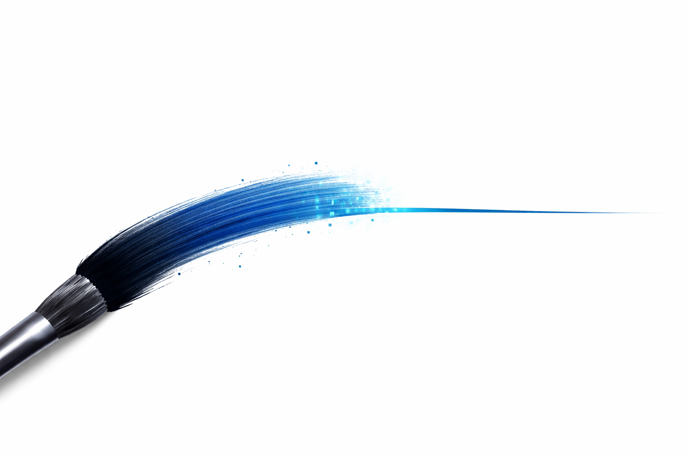
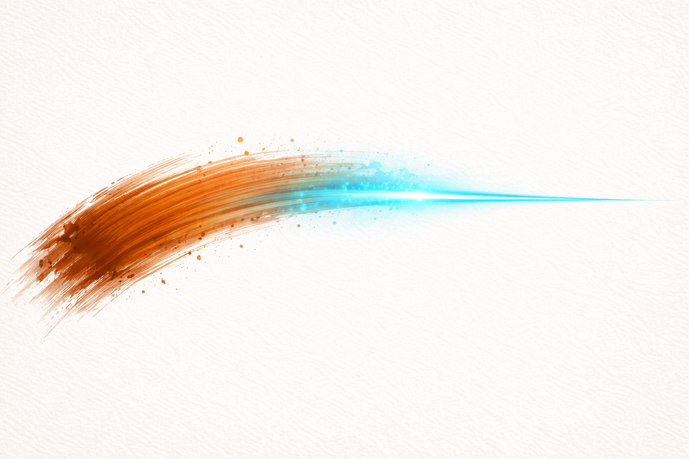
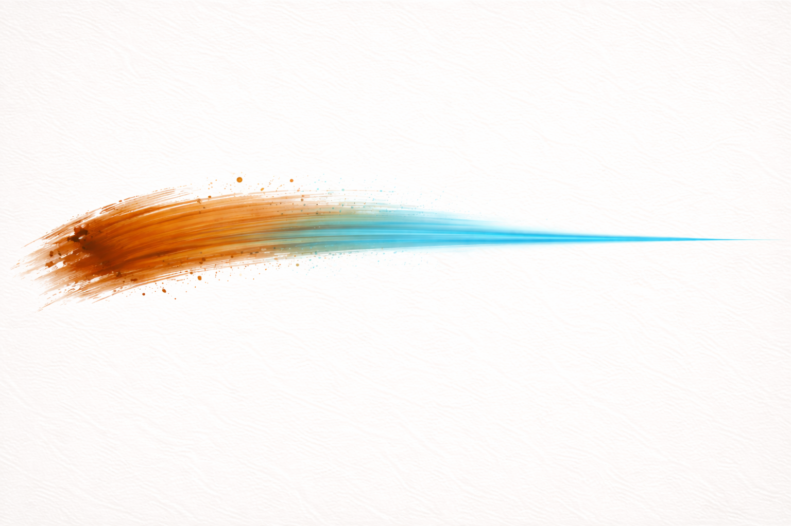

El gest
Procés
El punt de partida d'aquesta entrada era senzill: volia generar una imatge que capturés visualment la pregunta central del projecte. Una imatge que mostrés el moment exacte en què el gest humà es converteix en algorisme, on l'orgànic es dissol en el digital.
Vaig començar amb un prompt molt obert: demanar un traç de pinzell que es convertís en línia digital perfecta. El resultat va ser interessant però massa literal, apareixia un pinzell físic que no volia. Vaig anar refinant: primer eliminant el pinzell, després especificant la direcció esquerra-dreta, i finalment definint amb precisió els colors del projecte (terracota #C17B3F i cian #00B4D8) i l'estètica editorial que buscava.
En total vaig fer 7 iteracions de la imatge principal, més 4 textures addicionals. Cada prompt era una negociació: jo proposava, la IA interpretava, i jo decidia si aquella interpretació s'acostava al que tenia al cap. El que més em va sorprendre va ser que la dificultat no estava en descriure el resultat visual, sinó en descriure la qualitat del gest: la imperfecció, la textura, el pes de la pintura real.

Prompt "Hola, em podries generar una imatge d'un traç de pinzell a mà sobre fons blanc que es converteix en línia digital perfecta, tensió entre l'orgànic i el sintètic"

Prompt "Tornem a la imatge del traç, farem alguns canvis perquè sigui més contrastada la transició. A l'esquerra, una pinzellada orgànica de color terracota (#C17B3F), amb textura de pintura real, marques visibles de les truges del pinzell, expressiva i imperfecta. La pinzellada es transforma progressivament cap a la dreta en una línia digital perfectament recta i fina de color cian elèctric (#00B4D8), suau i precisa. La transició barreja la textura orgànica amb una geometria neta i digital. Composició horitzontal centrada sobre un fons crema amb textura de paper (#F5F0EB). Estètica editorial, sofisticada i minimalista, amb molt espai en blanc i contrast entre elements càlids orgànics i elements freds digitals."
Resultat

Prompt "El traç ha de ser recte i horitzontal, sense cap corba ni ondulació. Comença amb una pinzellada terracota gruixuda amb textura de pintura i es transforma gradualment en una línia digital blava fina i perfectament recta. Composició panoràmica molt ampla i baixa."
Reflexió
El procés d'iteració em va revelar alguna cosa que no havia anticipat: la IA té molt bona memòria per a la geometria i la composició, però li costa molt la imperfecció intencionada. Quan li demanava un gest "expressiu i imperfecte", tendia a generar alguna cosa que semblava imperfecte però d'una manera massa simètrica, massa neta. La imperfecció real, la del gest humà, és irregular d'una manera específica que els models semblen no acabar de capturar.
Això em va fer pensar en el títol del projecte d'una manera nova. El traç no és només el resultat visual: és tot el que passa entre la intenció i l'execució. I en aquest espai, entre el que volia i el que la IA va generar, és precisament on es troba la pregunta que vull explorar.
La decisió final va ser sempre meva: de les 7 iteracions, vaig triar la que millor capturava la tensió sense resoldre-la. No la més perfecta, sinó la més honesta.
Pot el gest humà existir en el digital?